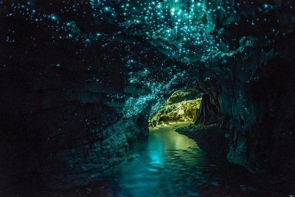
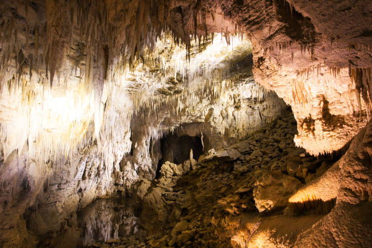
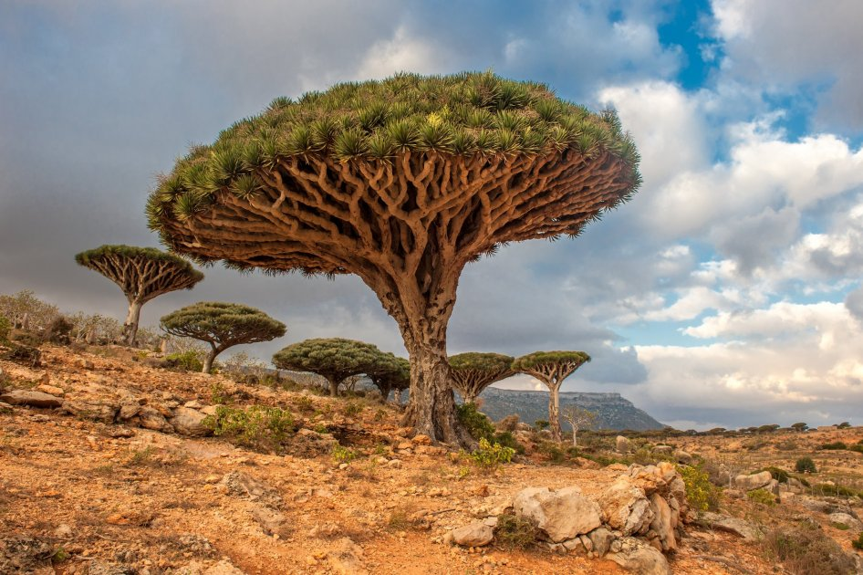
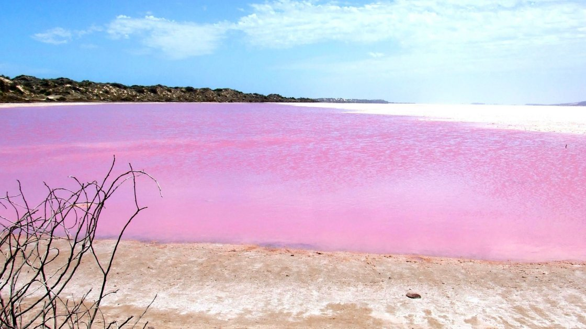

Печери Вайтомо, Австралія
Справжній шедевр природи, над яким вона працювала багато мільйонів років. Протягом довгих століть тут господарював океан, створюючи химерні нарости вапняку і таємничі хитросплетіння ходів. А потім вода відступила, утворивши систему з близько 150 печер.
 Драконові дерева на острові Сокотра, Ємен
Причиною фантазійної назви цих дерев є їх сік яскраво-червоного кольору. Зробивши надріз в корі, можна побачити, як Драконове дерево починає «кровоточити». Раніше таких дерев (деколи тисячолітніх) було досить-таки багато на Канарських островах, але внаслідок активного збору цінної червоної смоли їх кількість значно зменшилася. Подивитися на них ще можна в Ємені.
Озеро Ретба, Сенегал
Вирушаючи в Сенегал, варто розуміти, що яскравих пам’яток там настільки багато, що відвідати всі відразу навряд чи вдасться. Але що безперечно варто вашої уваги, так це загадкове «рожеве озеро» — Ретба.
Виглядає воно точно картинка з дитячої книжки — білосніжні берега і рожева вода. За таке незвичайне забарвлення відповідальні найдавніші ціанобактерії, що мешкають в солоному озері.